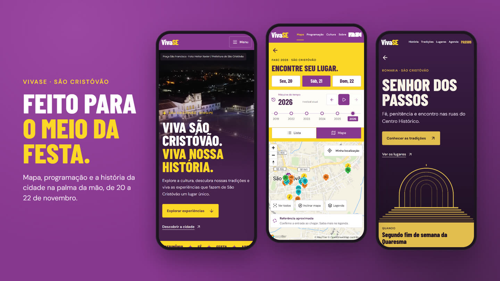

Matriz CSD
Seguindo o Design Sprint, separamos certezas, suposições e dúvidas sobre o público. Escolhemos os turistas que não conhecem a cidade e tratamos a dificuldade de orientação como hipótese a validar com visitantes.
Ideathon FASC 2026 · 19 a 21 de novembro
Plataforma para viver o FASC (Festival de Artes de São Cristóvão) e a cultura da cidade: mapa, programação, roteiros e uma máquina do tempo com a história do festival.
2º lugar no Ideathon FASC 2026
O VivaSE é uma plataforma cultural de São Cristóvão (SE), criada em três dias pela equipe Oxente Labs. A primeira experiência é o FASC 2026, a 41ª edição do festival, que ocupa praças, museus e ruas da cidade inteira de 20 a 22 de novembro. A ideia se resume em três ações: encontrar o festival, conhecer a cidade e guardar o encontro.
Os 20 espaços com foto real, endereço e o que acontece em cada um. Quando a posição é aproximada, o app avisa. O trajeto abre no aplicativo de mapas do celular.
144 registros reunidos da agenda oficial, com busca e uma “minha programação” salva no próprio aparelho.
18 edições e 191 artistas e grupos, sempre com fonte. No Palco João Bebe Água, por exemplo, dá para ver que o Olodum tocou ali em 2025.
Caminhos que ligam lugares e histórias em torno da Praça São Francisco, Patrimônio Mundial da UNESCO.
Cada visitante guarda a própria lembrança do festival, sem publicar nem enviar nada para um servidor.
A Festa de Nosso Senhor dos Passos é a segunda experiência da plataforma.
“O que tem hoje, e onde fica?”
Essa é a pergunta de quem chega a São Cristóvão pela primeira vez durante o FASC. A informação existe, mas está espalhada entre PDFs da programação, notícias e redes sociais. E juntar tudo no meio da festa, andando pelo Centro Histórico, não é fácil.
O desafio do Ideathon FASC 2026 foi ajudar esses turistas a se orientar durante o festival. Definimos três prioridades, nesta ordem:
Um cuidado guiou o projeto do começo ao fim: cada data, foto e informação tem fonte e crédito. Quando não confirmamos algo, preferimos dizer que não sabemos a inventar.
Seguindo o Design Sprint, separamos certezas, suposições e dúvidas sobre o público. Escolhemos os turistas que não conhecem a cidade e tratamos a dificuldade de orientação como hipótese a validar com visitantes.
As 24 páginas da programação completa do FASC 2026 foram lidas e conferidas uma a uma. O resultado são 20 espaços e 144 registros de agenda, cada um com o nível de precisão da sua localização.
212 entradas sobre artistas e edições foram cruzadas e deduplicadas, chegando a 230 registros. Auditamos 37 links de fontes e separamos o que foi apresentação confirmada do que foi só anúncio ou convite.
Vídeo do pitch apresentado no Ideathon FASC 2026 (2 min 22 s).
Em três dias, saímos do mapeamento do problema para um protótipo funcionando, publicado e apresentado em um pitch de três minutos. A banca reconheceu o projeto com o 2º lugar.
Próximos passos: testar com visitantes e parceiros, manter a programação atualizada e ampliar o acervo com curadoria.